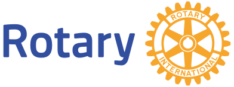

Amazon Web Services (AWS)
Expérience à venir
Expérience à venir à Dublin à partir de janvier 2027.
IA / DATA / TRANSFORMATION DES PROCESSUS
Étudiant ingénieur et manager, je conçois des solutions utiles à la croisée de l'IA appliquée, de l'efficacité opérationnelle et de la stratégie.

Je poursuis un double diplôme en ingénierie et management, en combinant la rigueur technique des Mines de Saint-Etienne avec la vision business d'emlyon business school.
Mon travail consiste à rendre l'information complexe plus utile : automatiser les tâches répétitives, structurer les données et transformer l'analyse technique en décisions actionnables.
Découvrir mon parcoursExpérience à venir
Expérience à venir à Dublin à partir de janvier 2027.

Stage transformation IA & data
Conception d'une application web interne de benchmark de masses véhicule, développement d'un modèle de classification sémantique sur 351 catégories et automatisation de la classification entre référentiels techniques.
Stage automatisation IT
Benchmark de solutions de déploiement de machines virtuelles en tenant compte des contraintes d'infrastructure, de cybersécurité et de traçabilité.
Association de vulgarisation scientifique
Organisation de conférences et d'activités pour la Fête de la science, avec coordination des partenaires, de la communication et du travail d'équipe.

Essai sur l'éthique professionnelle, classé 3e au niveau national et 2e au niveau régional par le Rotary.
Lire le projet
Un système automatisé de nettoyage et de désinfection des cartes vitales, récompensé par le 1er prix des Olympiades de sciences de l'ingénieur de l'académie de Versailles.
Lire le projet
Projet TIPE consacré à l'étude d'un système de recharge sans fil contrôlé et de ses contraintes pratiques.
Lire le projet2e prix national du EY AI & Data Challenge : analyse de données environnementales transformée en recommandations claires.
Étude de cas bientôt disponible
Projet de deep learning avec TensorFlow et la base MNIST pour classer des chiffres manuscrits.
Voir le projet
Défi de data science mêlant méthodes de classification et physique fondamentale.
Voir le projet
Conception et fabrication d'un capteur capacitif et de son système de conditionnement électronique.
Voir le projet
Système de mesure embarqué pour suivre la qualité du béton précontraint sur un ouvrage d'art.
Voir le projet
Conception d'un processeur fondé sur l'architecture ouverte de jeu d'instructions RISC-V.
Voir le projet
Fabrication en salle blanche, caractérisation électrique et optique, puis pilotage d'une matrice OLED.
Voir le projet
Étude, conception et caractérisation d'électrodes pour l'acquisition d'un électrocardiogramme.
Voir le projet
Solutions de communication sans fil pour une application IoT intégrée à une paire de chaussures.
Voir le projet
Étude de la propagation et de la réflexion des ondes dans l'ionosphère pour les télécommunications.
Voir le projet
Projet de mécanique des fluides consacré aux écoulements d'air et aux variations de pression.
Voir le projet2e prix national pour une étude de cas d’analyse de données environnementales consacrée à l’approvisionnement en eau potable.

3e au niveau national et 2e au niveau régional pour un essai sur la responsabilité en cas d’erreur de l’IA.

1er prix de l’académie de Versailles pour Smart’ Vitale, un système automatisé de désinfection des cartes vitales.

Programme Grande Ecole, double diplôme. Change management, méthodes du conseil, finance d'entreprise et analyse stratégique.
Diplôme d'ingénieur, spécialisation microélectronique et informatique.
Marchés financiers
Négociation professionnelle
Marque et excellence opérationnelle